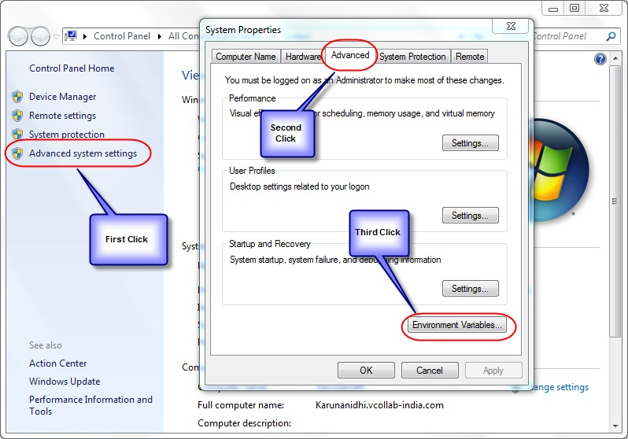
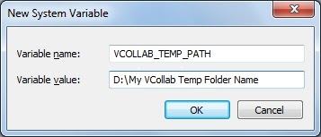

Environment Variables for VCollab Pro
VCollab Suite creates 3 Environment Variables during installation.
Variables Values VCOLLAB_DIR Installation_Directory PATH Installa tion_DirectoryVCollabPro64;Installat ion_DirectoryVCollabPresenter64;Inst allation_DirectoryVCollabPresenter32 VE3D_LICENSE_FILE Installation_DirectoryLicense If any of the above Environment variables is deleted, VCollab may not work.
In addition to the above variables, the Environment variable, VCOLLAB_TEMP_PATH can manually be set, if required. It can be any temporary directory which will be used by VCollab for temporary files. The "Current User Profile Directory" is used as the default temporary directory by VCollab, if this variable is not set. This Environment variable can be defined in User Environment Variables. Users need to make sure they have both read and write permission to the path specified here else VCOllab Pro may not function properly.
Steps to Set Environment Variables in Windows
- Go to the Start menu → Settings-->. Control Panel to open the Control Panel window.
- Click Advanced system settings to open System Properties dialog box
- Click the Advanced tab.

- Click the Environment Variables button to open the Environment Variables window.

- Click New which opens the New System Variable window as below.
- Enter VCOLLAB_TEMP_PATH as variable name and the temporary VCollab path as Variable value and click OK.

License File Setup
The Environment Variable VE3D_LICENSE_FILE is set along with System Variables at the time of installation as follows
VE3D_LICENSE_FILE Installation_DirectoryLicense
The Node Lock licensed products of VCollab will run automatically, if the license file is copied to the Installation_DirectoryLicense folder. If the user wants to keep the license file in some other folder, then the Environment variable (VE3D_LICENSE_FILE) should be changed to reflect the correct file path.
Eg: VE3D_LICENSE_FILE License_File_Path
For a Floating license, the Environment variable should point to the path where the License Server is running.
Eg: VE3D_LICENSE_FILE @License_Server_Machine_name
As a special case, if the user wants to run Node lock and floating applications of VCollab products in the same machine, then the environment variable should be set with both the paths. By default, the variable contains the node lock license file path as specified above. For specifying the floating license server path, the user should select the existing VE3D_LICENSE_FILE variable and append the license server path
Eg: VE3D_LICENSE_FILE NodeLock_License_FilePath;@License_Server_Machine_name
If the user doesn't have privileges to change the System Variable for licensing, then the user can create a variable VE3D_LICENSE_FILE under User variables and set the value for the floating license as follows.
Eg: VE3D_LICENSE_FILE @License_Server_Machine_name
Setting up the Environment Variables manually
If the user doesn't have installation permission, then the user can copy VCollab files from some other machine, where VCollab products are installed. In that case, the above mentioned Environment Variables need to be set manually.
Eg: If the VCollab files are copied into D:VCollab, then the environment variables should be manually set as follows
- VCOLLAB_DIR - D:VCollab
- PATH - D:VCollabVCollabPro64;D:VCollabVCollabPresenter32;D:VCollabVCollabPresenter64
- VE3D_LICENSE_FILE- D:VCollabLicense
- VCOLLAB_TEMP_PATH can be any temporary directory which will be used by VCollab. The "Current User Profile Directory" will be set as default temporary directory by VCollab, if this variable is not set.
Environment Variables for Visualization
| S.No. | Environment Variable | Description | Value |
|---|---|---|---|
| 1 | VCOL LAB_FORCE_OGL | This variable sets OpenGL 1.1 as scene renderer. | 1 |
| VCT_ COLORPLOT_OFF | This variable commands the loader not to load results by default. Results can however, be loaded on demand. | 1 | |
| VCOLLAB_ CAPTURE_IMAGE | This variable captures image and uses it for Microsoft PPT embed preview. | 1 | |
| VCOLLAB_US E_OGL_AMBIENT | There is an ambient color issue in case of openGL mode for some models as shown below. This can be fixed by setting this environment variable.
|
1 | |
| VCOLLAB_F ORCE_OGLIMAGE | If the application is consuming more than 2GB memory, saving an image file can sometimes cause the application to crash. This can be fixed by setting the environment variable VCOLLAB _FORCE _OGLIMAGE. Note: When running VCollabImag eGenerator, .exe if VCOLLAB FORCE _OGLIMAGE is set, the background color cannot be changed. Only the default color is used. |
1 | |
| VCOLLAB _PROFILE_PATH | If the user profile folder path contains Unicode characters, the Profile cannot be saved. This can be fixed by setting this environment variable with ascii folder path. | User defined ascii folder path. |